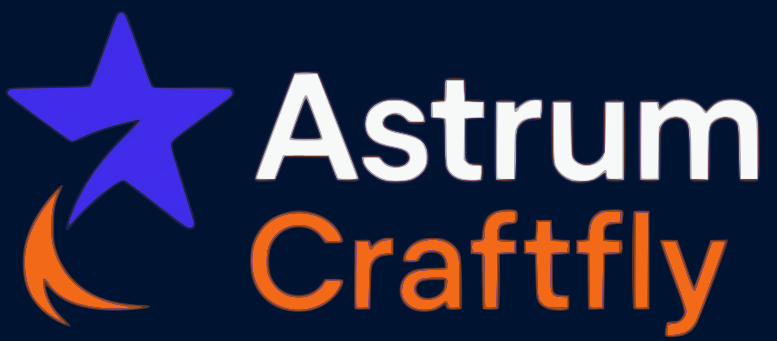

Desenvolvimento de sites
Nosso Portfólio

Site Fulano
Projeto de site institucional moderno e responsivo.
Site Beltrano
E-commerce completo com sistema de pagamento integrado.
1/3
Agência especializada em marketing digital, criação de sites e desenvolvimento de softwares para pequenas e médias empresas.
Projeto de site institucional moderno e responsivo.
E-commerce completo com sistema de pagamento integrado.
1/3
Projeto de site institucional moderno e responsivo.
E-commerce completo com sistema de pagamento integrado.
1/3